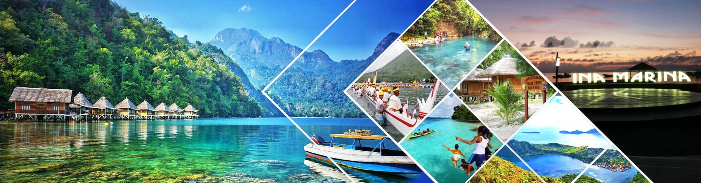
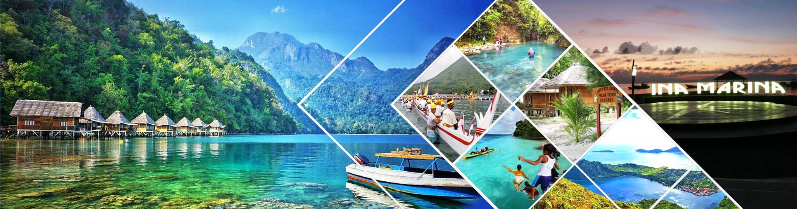

Inspirasi Perjalanan

 

Jelajahi Berbagai Destinasi Indonesia
Kekayaan alam dan budaya merupakan komponen penting dalam pariwisata di Indonesia. Pantai-pantai di Bali, gunung bromo di jawa timur, dan berbagai taman nasional di Sumatra merupakan contoh tujuan wisata alam yang dapat di kunjungi di Indonesia.


Tempat Populer di Indonesia
Add a description of the image here
Add a description of the image here
Add a description of the image here
Add a description of the image here